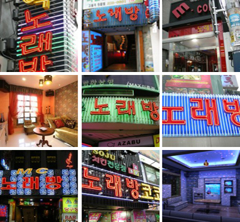

Karaoke

Norebang in Korea
Karaoke in Korea became popular in the 80′s and 90′s after the Karaoke machine was invented in Japan in the 70′s. Karaoke is called Norebang (노래방) in Korea. Norebang means sing room. You can find the 노래방 sign everywhere in Korea especially in entertainment districts or student areas.
Many Korean’s start off their night at bars and restaurants and end up in Norebang by the end. It is here that they can have some more fun with friends and sing their favourite songs. Also Norebangs are a great place to sober up after a few drinks or hang out until the morning if you missed your last train.
There are many different themes and styles to Norebangs in Korea. In most Norebangs, each room has a different them such as a Korean style room, French style, Bar style and so on. Usually Norebangs serve beer, soft drinks and snacks. The prices are generally cheap but there are some top range expensive Norebangs around. Usually the room is rented out by the hour but some Norebangs rent out the rooms per person. An average price is about 15,000 won an hour.
Most Karaoke rooms come equipped with 2 microphones, a tamborin, a remote control for selecting songs and a song book. There is quite a collection of English songs, Japanese songs and sometimes Chinese songs.
How to find Norebangs
Look at the pictures above and you will see "노래방". This sign reads "norebang" and this is where you can find the Karaoke rooms. After reading this article we can guarantee you will notice a lot more of these signs around Korea.